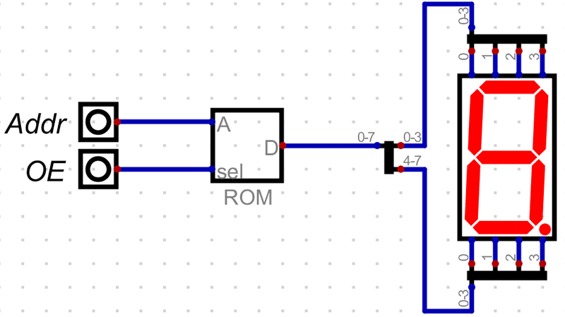

ROM实验
实验原理
ROM（Read Only Memory），即只读存储器，是指在应用系统中只能读出、不能写入的半导体随机存储器。 在计算机中，存放程序代码是ROM的一个典型应用场景。 也可以用来存放固定不变的数据，如字符点阵数据。
此外，还可以用ROM实现逻辑功能。 将ROM的地址看作逻辑电路的输入，而对应单元的内容就是逻辑电路的输出。 例如，可以用8X1位的ROM实现3输入1输出的任何逻辑功能。
本实验用ROM实现七段数码管的译码。
实验任务
-
用ROM设计七段显示译码电路
电路如图 1所示。ROM的地址作为十六进制数据输入，ROM单元的内容存放数码管每个段的是否需要点亮的信息。
-
绘制电路图。
ROM组件位于“Components/组件 ➤ Memory/存储器 ➤ ROM”。 ROM组件的属性设置为“数据位数：8；地址位数：4”。 显示组件位于“Components/组件 ➤ IO/输入输出 ➤ Displays/显示 ➤ Seven-Segment Display / 7段数码管”。
图 1. 使用ROM组件构成7段显示译码器 -
初始化ROM数据
在ROM组件的属性窗口点击“编辑”按钮，用下面的数据初始化ROM的前8个存储单元。
0b00111111 0b00000110 0b01011011 0b01001111 0b01100110 0b01101101 0b01111101 0b00000111
-
-
仿真
通过输入引脚输入“0000~0111” 8组数据，七段数码管应显示数字“0~7”。
-
完善数据使电路能够显示“8~F”
理解数码管显示原理，编写“8~F”的显示数据，填入ROM的后8个存储单元，验证结果是否正确。
-
总结ROM组件的功能和用法